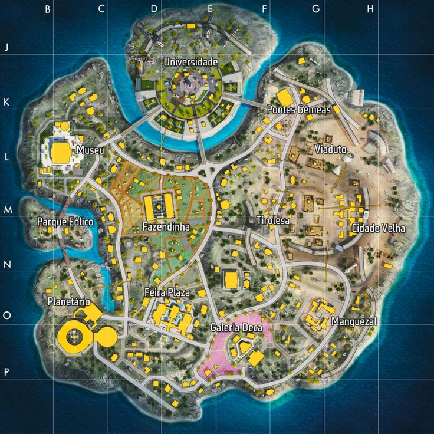
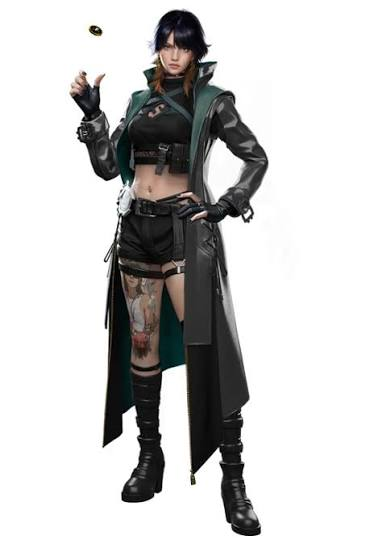
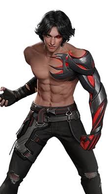
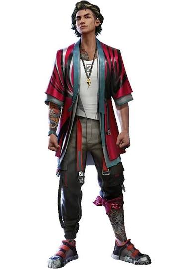
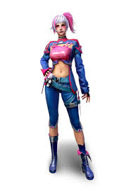
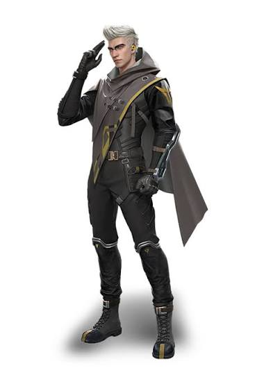

introdução ao free fire
Garena Free Fire é um jogo eletrônico de ação-aventura do gênero battle royale visto numa perspectiva em terceira pessoa.
Para começar a jogar, é necessário criar uma conta pessoal,
na qual você pode escolher se deseja criar uma conta própria do jogo ou se deseja conectar-se com alguma rede social,
como o Facebook. Após efetuar o login,
jogador deve configurar seu perfil e explorar o jogo afim de obter conhecimento sobre a jogabilidade
mapas
Bermuda

Bermuda é o mapa original de Free Fire, presente desde o lançamento oficial do jogo, em 30 de setembro de 2017.
Ambientado em uma ilha tropical, combina áreas urbanas,
zonas industriais, regiões costeiras e terrenos abertos.
Entre os locais nomeados estão Peak, Pochinok, Hangar,
Factory, Clock Tower e Ilha Sentosa.
Ao longo dos anos,
o mapa recebeu atualizações que modificaram aspectos estruturais e visuais de diferentes áreas.
Em 2020, foi lançada uma segunda versão, intitulada Bermuda Remasterizado, que ap
resentou alterações em relação ao cenário original.
A atualização manteve parte da estrutura inicial,
mas modificou áreas específicas.
A Ilha Sentosa foi substituída por uma nova área denominada Samurai’s Garden.
A versão também incluiu novos pontos de interesse, como Academy, Fisherman’s Creek, Hydrapower e Yagami Garden.
O mapa não é utilizado nas competições oficiais do jogo.
Purgatório

Introduzido em 2018, Purgatório foi o segundo mapa adicionado ao jogo. Apresenta maior variação topográfica em comparação com Bermuda, com elevações,
montanhas e um rio que divide o território. Entre seus locais nomeados estão Quarry, Moathouse, Crossroads e Brasília.
O mapa também inclui tirolesas que conectam regiões elevadas, ampliando as possibilidades de deslocamento.
Kalahari

Kalahari foi lançado em fevereiro de 2020. Inspirado no deserto africano homônimo, apresenta ambientação árida,
com formações rochosas, áreas abertas e estruturas abandonadas. Possui menor extensão territorial em
comparação com mapas anteriores e, em determinados modos, comporta vinte jogadores por partida. Entre os locais nomeados estão Refinaria,
Posto de Comando, Cemitério de Elefantes e Submarino. O mapa substituiu
temporariamente Purgatório nas partidas ranqueadas, decisão posteriormente revertida, passando a integrar o sistema de rotação de mapas
Nova terra

Nova Terra foi introduzido em 2022 e apresenta temática futurista. O mapa inclui mecânicas específicas,
como o Planetário, que possui zonas de antigravidade capazes de alterar temporariamente a movimentação dos jogadores.
Entre os locais nomeados estão Fazendinha, Museu, Universidade, Cidade Velha e Viaduto.
personagens
O Free Fire possui atualmente 65 personagens jogáveis (41 masculinos e 24 femininos),
cada um com habilidades especiais
ativas (que você precisa apertar para usar) ou passivas (que funcionam sozinhas durante a partida).

ignis
| Tipo de habilidade | ATIVA |
| Nome | Paredão de Fogo |
| Descrição | Posiciona uma cortina de chamas com 12 metros de largura e duração de 10 segundo s (distância máxima de posicionamento: 15 metros). Oponentes e paredes de gel que entrarem em contato com a cortina sofrem dano de combustão: recebem 30 de dano instantaneamente e, em cada segundo seguinte, 10 de dano, além de perder 20% de durabilidade de armadura. O efeito combustão tem duração de 2 segundos. Paredes de gel recebem 200 de dano instantaneamente e 200 de dano por 1 segundo. Tempo de recarga: 60 segundos. |

Suzy
| Tipo de habilidade | PASSIVA |
| Nome | Abate é Dinheiro |
| Descrição | Suas marcações de oponentes têm valor de recompensa. Qualquer joga dor na equipe ganhará 200 em grana na partida por abater um oponente marcado, e você receberá 100 ex tras por abater um oponente. Receba 400 Fichas FF adicionais na Máquina de Ficha em partidas de BR.. |

Sônia
| Tipo de habilidade | PASSIVA |
| Nome | Nanoproteção |
| Descrição | Após receber dano letal, entra em um modo invulnerável e imóvel por 0.4 segundos. Em seguida, recebe um escudo com 1 PV e duração de 2 segundos. O usuário da habilidade será eliminado quando o escudo desaparecer. Tempo de recarga: 180 segundos. |

Orion
| Tipo de habilidade | ATIVA |
| Nome | Onda Escarlate |
| Descrição | Substitui PE por 300 de Energia Escarlate. Consome 200 de Energia Escarlate para ativar sua proteção, durante a qual você não recebe dano ou ataca oponentes. Ele absorve 10 PV (ignorando Pontos de Escudo do oponente) de adversários no alcance de 5 metros. A habilidade dura por 3 segundos, durante a qual sua velocidade de movimento é reduzida por 20%. Tempo de recarga: 3 segundos. |

Tatsuya
| Tipo de habilidade | ATIVA |
| Nome | Disparo Rebelde |
| Descrição | Dê uma arrancada para frente em rápida velocidade por 0.3 segundos. Esta habilidade pode ser acumulada para até 2 usos consecutivos. O uso consecutivo da habilidade terá tempo de recarga de 1 segundo entre usos. O tempo de recarga para a arrancada é de 60 segundos.. |

Íris
| Tipo de habilidade | ATIVA |
| Nome | RaStReAdOrAh |
| Descrição | Em até 15 segundos depois de ativar a habilidade, é possível disparar e acertar uma parede de Gel para marcar oponentes dentro de 7 metros dela e causar dano nestes oponentes (o dano causado é menor do que o normal). Afeta no máximo 5 paredes de gel. O tempo de recarga da habilidade é de 60 segundos. |

Homero
| Tipo de habilidade | ATIVA |
| Nome | Olho de Argos |
| Descrição | Solta um drone frontal dentro de 100 metros de distância frontal, criando uma explosão de 5 metros de diâmetro que reduz a velocidade de movimento em 40% e a velocidade de disparo em 40%. Causa 25 de dano. O tempo da habilidade dura 5 segundos, com 60 segundos para recarga. |
Kenta
Habilidade especial:
Nairi
Habilidade especial:
Otho
Habilidade especial:
Leon
Habilidade especial:
Dimitri
Habilidade especial:
Thiva
Habilidade especial:
D-Boas (D-Bee)
Habilidade especial:
Maro
Habilidade especial:
Xtrema (Xayne)
Habilidade especial:
Skyler
Habilidade especial:
Shirou
Habilidade especial:
Chrono
Habilidade especial:
Diana (Dasha)
Habilidade especial:
Jai (Biochip Recarga Furiosa)
Habilidade especial:
Kamir (K)
Habilidade especial:
Luqueta
Habilidade especial:
Evelyn (Clu)
Habilidade especial:
Jota
Habilidade especial:
Alvaro: Renascido
Habilidade especial:
Wolfrahh
Habilidade especial:
Kapella
Habilidade especial:
Steffie
Habilidade especial:
Notora
Habilidade especial:
Alok
Habilidade especial:
Shani
Habilidade especial:
Joseph
Habilidade especial:
A124
Habilidade especial:
Rafael
Habilidade especial:
Laura
Habilidade especial:
Hayato: Renascido
Habilidade especial:
Moco: Renascida
Habilidade especial:
Wukong
Habilidade especial:
Antonio
Habilidade especial:
Andrew: Renascido
Habilidade especial:
Kelly: Renascida
Habilidade especial:
Olivia
Habilidade especial:
Ford
Habilidade especial:
Nikita
Habilidade especial:
Misha
Habilidade especial:
Maxim
Habilidade especial:
Kla
Habilidade especial:
Paloma
Habilidade especial:
Miguel
Habilidade especial:
Caroline
Habilidade especial: